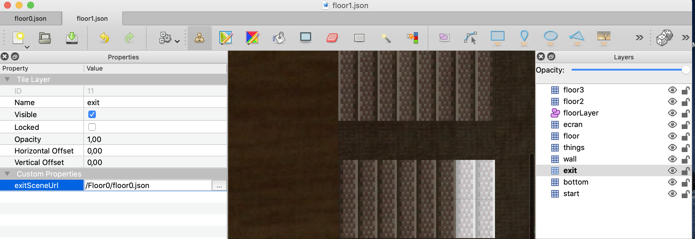

CREATE YOUR MAP !
Learn how to create your own map! If you want to go the easy route, you can instead PICK A PREBUILT MAP.
Tools you will need
In order to build your own map for WorkAdventure, you need:
- the Tiled editor software
- "tiles" (i.e. images) to create your map (this starter kit provides a good default tileset for offices)
- a web-server to serve your map (this starter kit proposes to use Github static pages as a web-server which is both free and performant)
WorkAdventure comes with a "map starter kit" that we recommend using to start designing your map quickly.
Getting started
Start by creating a GitHub account if you don't already have one.
Then, go to the Github map starter kit repository page and click the "Use this template" button.

You will be prompted to enter a repository name for your map.

Be sure to keep the repository "Public".
In your newly created repository, click on the Settings tab and scroll down to the GitHub Pages section. Then select the gh-pages branch. It might already be selected, but please be sure to click on it nonetheless (otherwise GitHub will not enable GitHub pages that we use to host your map.

Wait a few minutes a Github will deploy a new website with the content of the repository. The address of the website is visible in the "GitHub Pages" section.

Click on the link. You should be redirected directly to WorkAdventure, on your map!
Customizing your map
Your map is now up and online, but this is still the demo map from the starter kit. You need to customize it.
Cloning the map
Start by cloning the map. If you are used to Git and GitHub, simply clone the map to your computer using your preferred tool and jump to the next chapter.
If you are new to Git, cloning the map means downloading the map to your computer. To do this, you will need Git, or a Git compatible tool. Our advice is to use GitHub Desktop. We recommend you take some time mastering the notion of pull / commit / push as this will make uploading your maps really easier.
As an (easier) alternative, you can simply use the "Export" button to download the code of the map in a big Zip file. When you want to upload your work again, you will simply drag'n'drop your files in the GitHub website.
Loading the map in Tiled
The sample map is in the file map.json.
You can load this file in Tiled.
Now, it's up to you to edit the map and write your own map.
Some resources regarding Tiled:
About WorkAdventure maps
In order to design a map that will be readable by WorkAdventure, you will have to respect some constraints.
In particular, you will need to:
- set a start position for the players
- configure the "floor layer" (so that WorkAdventure can correctly display characters above the floor, but under the ceiling)
- eventually, you can place exits that link to other maps
WorkAdventure Map Rules
A few things to notice:
- your map can have as many layers as you want
- your map MUST contain a layer named "floorLayer" of type "objectgroup" that represents the layer on which characters will be drawn. Every layer above the "floorLayer" will be displayed on top of the characters.
- the tilesets in your map MUST be embedded. You cannot refer to an external typeset in a TSX file. Click the "embed tileset" button in the tileset tab to embed tileset data.
- your map MUST be exported in JSON format. You need to use a recent version of Tiled to get JSON format export (1.3+)
- WorkAdventure doesn't support object layers and will ignore them
- If you are starting from a blank map, your map MUST be orthogonal and tiles size should be 32x32.

Defining a default entry point
In order to define a default start position, you MUST create a layer named "start" on your map. This layer MUST contain at least one tile. The players will start on the tile of this layer. If the layer contains many tiles selected, the players will start randomly on one of those tiles.

In the screenshot above, the start layer is made of the 2 white tiles. These tiles are not visible to the end user because they are hidden below the "bottom" layer that displays the floor of the map.
Defining exits
In order to place an exit on your scene that leads to another scene:
- You must create a specific layer. When a character reaches ANY tile of that layer, it will exit the scene.
- In layer properties, you MUST add "exitSceneUrl" property. It represents the map URL of the next scene. For example :
/<map folder>/<map>.json. Be careful, if you want the next map to be correctly loaded, you must check that the map files are in folderback/src/Assets/Maps/<your map folder>. The files will be accessible by url<HOST>/map/files/<your map folder>/.... - In layer properties, you CAN add an "exitInstance" property. If set, you will join the map of the specified instance. Otherwise, you will stay on the same instance.
- If you want to have multiple exits, you can create many layers with name "exit". Each layer has a different key
exitSceneUrland have tiles that represent exits to another scene.

Defining several entry points
Often your map will have several exits, and therefore, several entry points. For instance, if there is an exit by a door that leads to the garden map, when you come back from the garden you expect to come back by the same door. Therefore, a map can have several entry points. Those entry points are "named" (they have a name).
In order to create a named entry point:
- You must create a specific layer. When a character enters the map by this entry point, it will enter the map randomly on ANY tile of that layer.
- In layer properties, you MUST add a boolean "startLayer" property. It should be set to true.
- The name of the entry point is the name of the layer
- To enter via this entry point, simply add a hash with the entry point name to the URL ("#[startLayerName]"). For instance: "https://workadventu.re/_/global/mymap.com/path/map.json#my-entry-point".
- You can of course use the "#" notation in an exit scene URL (so an exit scene URL will point to a given entry scene URL)
Pushing the map
When your changes are ready, you need to "commit" and "push" (i.e. "upload") the changes back to GitHub. Just wait a few minutes, and your map will be propagated automatically to the GitHub pages web-server.
Need some help?
WorkAdventure is a young project and much needs to be said / written regarding map editing.
If you are facing any troubles, do not hesitate to open an "issue" in the GitHub WorkAdventure account.